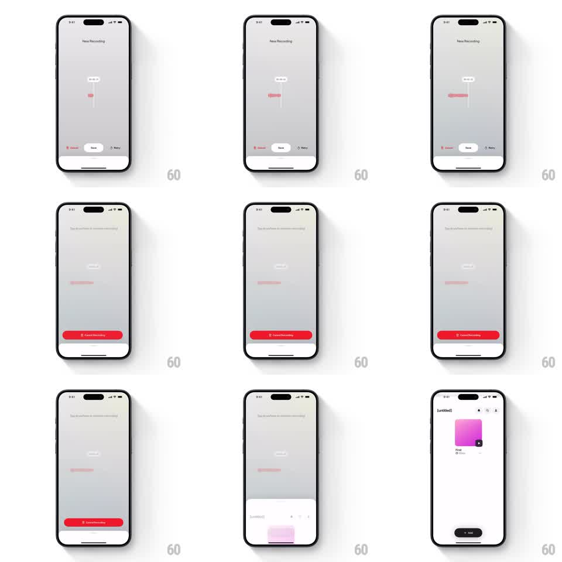

Media
Frame-by-frame

Rebuild this interaction 1:1: on the recording review screen, tapping Cancel morphs the small Cancel action into a full-width red "Cancel Recording" confirmation bar while Save and Retry slide away - a destructive-action confirmation built from the button itself.

Rebuild this interaction 1:1: on the recording review screen, tapping Cancel morphs the small Cancel action into a full-width red "Cancel Recording" confirmation bar while Save and Retry slide away - a destructive-action confirmation built from the button itself. ## Integration Integration: stack-agnostic spec - springs given as stiffness/damping, timed motions as duration + curve; map every value to your framework and animation library of choice. ## Scene "New Recording" review screen: trim readout and pink waveform center, bottom action row with three small pills - Cancel (red text), Save (dark filled), Retry (gray). After confirmation: back on the library screen with the pink artwork card and an Add button. ## Motion spec Pattern: button morph to full-width confirmation. - Tap Cancel: the Cancel pill expands horizontally to full width and fills red, its label swapping to "Cancel Recording" with a trash icon (~250ms, ease-out); simultaneously Save and Retry slide outward (Save up, Retry down ~24px) and fade (~200ms). - Title/copy above fades to a confirmation prompt (~150ms). - Tapping the red bar commits: the whole review screen dismisses downward (~300ms, ease-in) and the library screen settles in. - Tapping outside reverses the morph to the three-pill row. ## Calibration - The confirmation bar must visibly grow from the Cancel pill's original slot - no teleport. - Destructive styling (solid red) appears only in the expanded state; the small pill stays text-only. ## Reduced motion Pill crossfades to the red bar in place (150ms). ## Don't miss - Save and Retry leave in different directions so the row feels like it splits apart. - The commit dismiss is a downward sheet drop, not a fade.